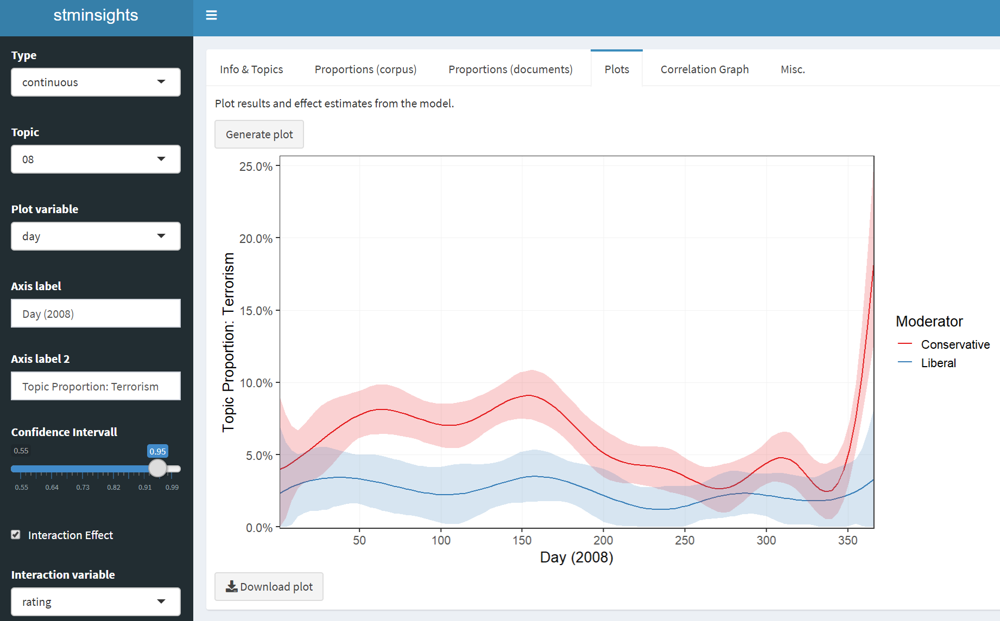

A Shiny Application for Structural Topic Models
This app enables interactive validation, interpretation and visualisation of Structural Topic Models (STM). Stminsights is focused on making your life easier after fitting your STM models. In case you are not familiar with STM, the package vignette is an excellent starting point.
How to Install
You can download and install the latest development version of the app by running devtools::install_github('methodds/stminsights').
For Windows users installing from github requires proper setup of Rtools, for which a tutorial is available here.
stminsights can also be installed from CRAN by running install.packages('stminsights').
How to Use
After loading stminsights you can launch the shiny app in your browser:
You can then upload a .RData file which should include:
- one or several
stmobjects. - one or several
estimateEffectobjects. - an object
outwhich was used to fit your stm models.
As an example, the following code fits two models and estimates effects for the Political Blog Corpus. Afterwards, all objects required for stminsights are stored in stm_poliblog5k.RData.
library(stm)
out <- list(documents = poliblog5k.docs,
vocab = poliblog5k.voc,
meta = poliblog5k.meta)
poli <- stm(documents = out$documents,
vocab = out$vocab,
data = out$meta,
prevalence = ~ rating * s(day),
K = 20)
prep_poli <- estimateEffect(1:20 ~ rating * s(day), poli,
meta = out$meta)
poli_content <- stm(documents = out$documents,
vocab = out$vocab,
data = out$meta,
prevalence = ~ rating + s(day),
content = ~ rating,
K = 15)
prep_poli_content <- estimateEffect(1:15 ~ rating + s(day), poli_content,
meta = out$meta)
save.image('stm_poliblog5k.RData')After launching stminsights and uploading the file, all objects are automatically imported and you can select which models and effect estimates to analyze.
In addition to the shiny app, several helper functions are available, e.g. get_effects() for storing effect estimates in a tidy dataframe.
How to Deploy on Shiny Server
Deploying stminsights to your own shiny server is simple: Place the file app.R, which is located at inst/app of this package, to a folder in your server directory and you should be good to go.
To test stminsights on my server, you can download stm_poliblog5k.RData here and upload it at www.polsoz.uni-bamberg.de/stminsights.
Citation
If you use stminsights for your publications please consider citing it:
Carsten Schwemmer (2018). stminsights: A Shiny Application for Inspecting
Structural Topic Models. R package version 0.2.0.
https://github.com/methodds/stminsightsA BibTeX entry for LaTeX users is:
@Manual{,
title = {stminsights: A Shiny Application for Inspecting Structural Topic Models},
author = {Carsten Schwemmer},
year = {2018},
note = {R package version 0.2.0},
url = {https://github.com/methodds/stminsights},
}